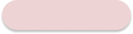
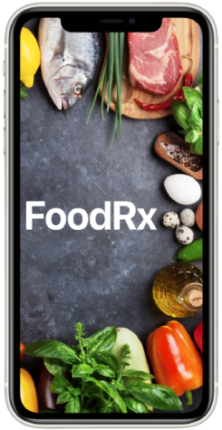
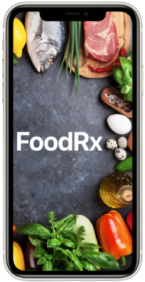

Hi! I'm Amanda
Storyteller, UX/UI Designer, Amateur Crafter


Not every story is about castles and far away lands, in fact, those aren't even my favorite stories to tell. In fact, here's a story about an animal rescue and how their KPI's improve with an updated User Interface:
Non-profit Website Redesign
Client:
Midwest Animal Rescue
& Services
Midwest Animal Rescue
& Services
Service:
UX/UI Design
UX/UI Design
Summary:
Goals: Make the website easier to navigate, a place where people can easily find resources, and are able to browse, apply to foster, adopt, donate, or learn more with ease.
This project's focus was on searchability and decreasing the lag between learning about an animal and applying to take them home!
Goals: Make the website easier to navigate, a place where people can easily find resources, and are able to browse, apply to foster, adopt, donate, or learn more with ease.
This project's focus was on searchability and decreasing the lag between learning about an animal and applying to take them home!
Role:
UX Researcher
UX Researcher
Tools Used:
Figma, Slack
Figma, Slack

Research
Research Content 1
Research Content 2
Research Content 3
Research Content 4


 
